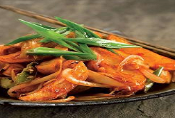

|  | Vegetarian Potatoes is very healthy and testy recipe. But Chines test is also give a different flavour to make Veg Potatoes sauces and spices. This recipe easy-to-make saucer you can also serve as a snack or lunch. |
Ingredients: Potatoes 4 large sized, oil 4 tablespoon, garlic 2 teaspoon, ginger 1/2 teaspoon, green chillies 1 teaspoon, thinly sliced spring onions whites 1/2 cup, tomato ketchup 1 teaspoon, soy sauce 2 tablespoon, chilli sauce 1/2 teaspoon, salt as per required, cornflour 2 teaspoon dissolved in water of ½ cup, and For garnish spring onion greens 1/5 cup finely all ingredient will be chopped. Method:Boil the potatoes in water check-out they are near 80% boiled. Cut broiled potatoes like French fries. Warmth the oil on a high flame, put the potato slices and roast till they are change in golden brown. Remove on a flame and keep sideway, in same oil put spring onion, green chillies, garlic and ginger and pan-fry for a few secds, put the potato fingers, chilli sauce, tomato ketchup, salt as per required, soya sauce, cornflour mixture and fry for 1 - 2 mints or till the concoction thickens. Serve with hot and spring onion greens.
|
||||

Crispy Pizza
Crispy Pizza and Pressed Panini authentic recipe One of the very famous Street Italian food.
Golden Chicken
Crispy and curried Golden chicken recipe for cooking Golden Chicken ghastly.